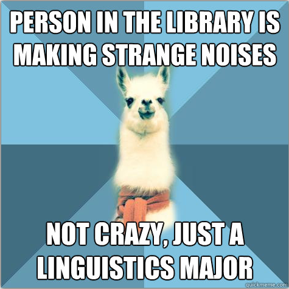
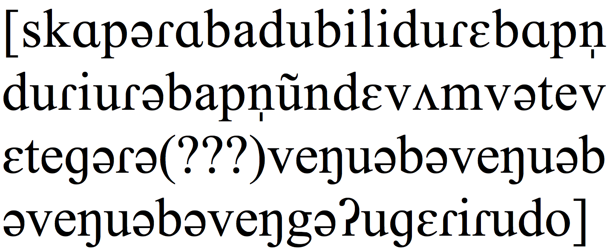
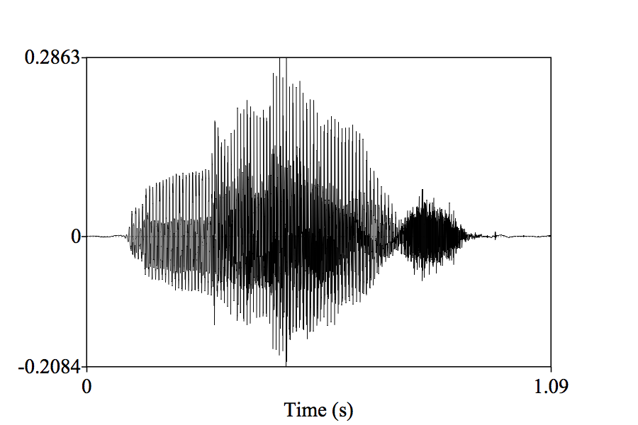
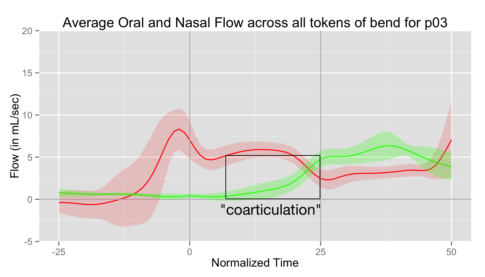
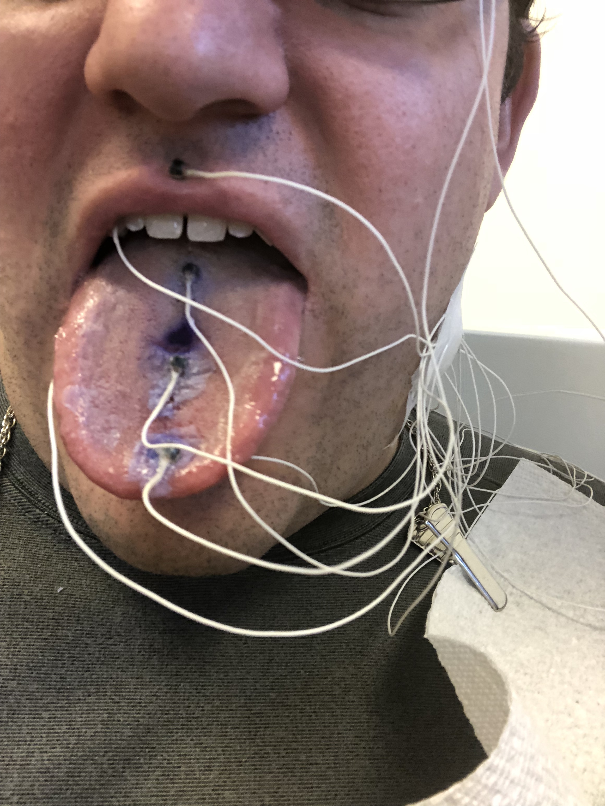
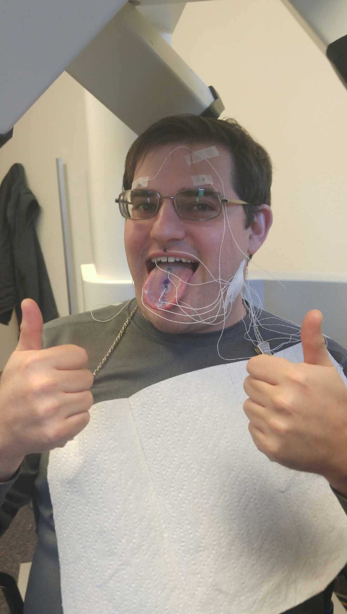

(This talk is available at
http://savethevowels.org/talks/phonetic_tools.html)
LING 210 - Will Styler
Hi, I’m Will
I’m a Phonetician
I have a problem
Your head isn’t transparent

We care what you’re doing in
there
How your tongue is moving
What the various other articulators are doing
How air is flowing
How this turns into changes in sound
How you’re listening to and interpreting speech
… but we can’t see any of it
- So how can we study and measure speech and speech perception?
Four main types of tool
Listening and the IPA
The International Phonetic
Alphabet
A writing system used to transcribe what exactly is being
said in any language of the world.
“Scatman” by Scatman John

Acoustic Analysis
Anything important that you do inside your mouth will affect the
acoustic signal
Listeners use the acoustic signal to pick up on what we’re
saying
By studying the sound of speech, we can recover information about
what you did

Spectrograms

Acoustic Analysis
- Pros:
- Very cheap
- Completely non-invasive
- Captures sound in real time
- Gives us all the detail which is available to listeners
- Cons:
- Information is hard to processs
- Doesn’t tell us directly about articulation
- Many elements affecting the same signal
Sound tells us about the
entire system
Changes to tongue, voicing, lips, velum, all at once
Many processes reflected in a single signal
Sometimes, we want to measure what a single articulator is
doing
Electropalatography
Create a fake palate with many, many sensors
Measure, electrically, when and where the tongue is making
contact


Electropalatography
- Pros:
- Tells us when and where the tongue is touching the roof of the
mouth
- Gives very detailed time information
- Looks at the shape of the contact too
- Cons:
- Very expensive
- Palates must be created for each participant
- Doesn’t capture many speech sounds
Oral/Nasal Airflow
- “How much air is coming out of the mouth and/or nose right
now?”
| ### Coarticulation |
| When we start preparing for the next sound before it even
begins |
| * In the word “bend”, we start nasal airflow before the nasal /n/,
during the vowel |
Let’s look at the airflow!



| ### Oral/Nasal Airflow Measurement |
| - Pros: - Tells us directly about nasality -
Reliable measurement - Not super invasive |
| - Cons: - Differs from person to person - Muffles
speech - Requires an expensive system |
Electromagnetic
Articulography (EMA)
Electromagnetic pulses around the head are picked up by tiny
sensors
Measures the position of sensors in real time, very precisely
- Accurate to 0.1mm, at up to 1250 measurements per second
We’re using a Carstens AG501 here at Michigan




EMA Data

Electromagnetic
Articulography (EMA)
- Pros:
- Gives us precise position information
- Gives us precise time information
- Possible to study two people at once
- No noise (in data or from machines)
- Cons:
- Only gives us individual points (rather than the whole tongue)
- Very time-intensive to collect and label
- Sensitive to magnetic fields
- Very expensive machines
- Starts with “Now I’ll glue this to your tongue…”
Articulatory Measurements
are helpful
They let us measure what individual articulators are
doing
They give precise information rather than noisy signals
They provide a “second opinion” for acoustic data
… but they still don’t let us see what’s
happening
Trans-Nasal Laryngoscopy
Content Warning: Things are about to get weird.
Trans-Nasal Laryngoscopy
- Pros:
- Inexpensive
- Full color video
- High Framerates
- Cons:
- Only useful for the larynx and pharynx
- Requires a doctor to be present
- “OK, now we’ll stick this camera up your nose”
X-Ray Imaging
- Pass radiation through the participant onto video film
Video
Source
X-Ray Imaging
- Pros:
- Low noise
- High Framerate
- Available 30 years ago
- Cons:
- Flesh doesn’t show up well
- Substantially irradiates your participants’ heads
Ultrasound
Ultrasound

From University of Michigan Phonetics Lab
Ultrasound
- Pros:
- Poses no risk to participant
- Can be done in any office/setting by linguists
- Provides the entire tongue
- Silent in audible frequencies
- Cons:
- Only shows the tongue
- One Dimensional**
- Can’t visualize the roof of the mouth or other articulators
- Very, very noisy data
Magnetic Resonance Imaging
(MRI)
Strong magnetic fields can be made to cause hydrogen atoms to
emit very faint radio signals
These radio signals, with clever pulsing of the fields, can map
the location of water in the body
We look for the water corresponding to the areas we’re
mapping
Video
Source —
MRI
- Pros:
- Can visualize any structure
- Can visualize any angle
- Non-invasive
- Capable of very fine details
- Cons:
- Requires access to an MRI machine
- Very expensive
- Will pull any magnetic metals in you out of you
- Very loud
- Very slow
There’s no free lunch
- No perfect balance of image quality, speed, noise, and participant
suffering
- We need methods for understanding how humans hear spoken language,
too!
Modifying the Signal
- Change the signal and see how humans respond to it
Remember
that vowel nasality we were talking about earlier?
- Can we use that to tell “bad” and “ban” apart without hearing the
last consonant?

Sine Wave Speech
Let’s listen to some sounds
| ### Let’s listen to some sounds |
|
|
|
### Now let’s play all three at once! |
|
### Does this help? |
|

This is
called “Sine wave speech”, and it’s really awesome.
- Processing sound in this way tells us what humans are actually
listening for in speech
Modifying the Signal
- Pros:
- Can visualize any structure
- Can visualize any angle
- Non-invasive
- Capable of very fine details
- Cons:
- Requires access to an MRI machine
- Very expensive
- Will pull any magnetic metals in you out of you
- Very loud
- Very slow
Measuring Speech Perception
Response-based measures
Reaction time
- Measures cognitive load, processing time
Accuracy
- Measures absolute perception
Response-based measures
- Pros:
- Easy to collect
- Easy to interpret
- Gets at the core of linguistic understanding
- Cons:
- RT requires specialized equipment and software
- Doesn’t give very fine-grained information
- Accuracy is all-or-nothing
- Many things can affect reaction time besides speech perception
Eyetracking
Let participants respond by looking at pictures
Track the position and timing of their gaze
Humans can look more quickly and accurately than they can
physically press buttons

From University of Michigan Phonetics Lab
From University of Michigan Phonetics Lab
Eyetracking
- Pros:
- Very intuitive for participants
- Captures decisions with fine temporal detail
- Captures aspects of the decision-making process that accuracy can
miss
- Can measure cognitive load more directly**
- Cons:
- Requires very expensive ($40,000) equipment
- Analysis is much more difficult
- Words and sounds tested need to be “imageable”
- People still vary in the time course of perception
EEG measures localized brain activity
fMRI measures and localizes brain activity more
precisely
Transcranial Magnetic Stimulation can temporarily disable parts
of the brain
… and most other psychological measures can be applied to
speech
- … way beyond “I think he said ‘bend’”
To measure the sounds of speech
To measure individual articulators
To image inside the head
… and to understand how we’re hearing other people talk
For now,
you’ll stick to the IPA and careful listening
But when you fall in love with speech, come find us
The best part about phoneticians is that we love sharing our
toys
Thank you!
Questions?
(This talk is available at
http://savethevowels.org/talks/phonetic_tools.html)